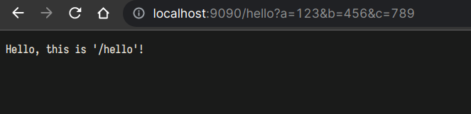
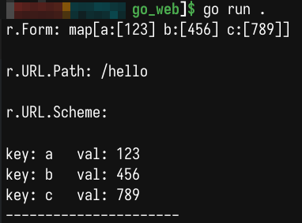

GO WEB 基础
入门代码
package main
import (
"fmt"
"log"
"net/http"
"strings"
)
func sayhello(w http.ResponseWriter, r *http.Request) { // w,r 分别是输出到网页的文件指针，和从访问参数得到的信息
r.ParseForm() //解析参数，默认是不会解析的
fmt.Println("r.Form:", r.Form) //这些信息是输出到服务器端的打印信息
fmt.Println()
fmt.Println("r.URL.Path:", r.URL.Path) //访问的路径
fmt.Println()
fmt.Println("r.URL.Scheme:", r.URL.Scheme) //r.URL.Scheme
fmt.Println()
for k, v := range r.Form { //循环输出r.Form
fmt.Println("key:", k, " val:", strings.Join(v, ""))
}
fmt.Println("----------------------")
fmt.Fprintf(w, "Hello, this is '/hello'!") //给客户的回复
}
func sayhi(w http.ResponseWriter, r *http.Request) {
fmt.Fprintf(w, "Hello, this is '/hi'!")
}
func main() {
http.HandleFunc("/hello", sayhello) //设置访问的路由,及其处理函数
http.HandleFunc("/hi", sayhi) //设置访问的路由,及其处理函数
err := http.ListenAndServe("127.0.0.1:9090", nil) //设置监听的端口,并返回错误
if err != nil { //错误处理
log.Fatal("ListenAndServe err:", err)
}
}
下图是，在浏览器访问后的输出：


处理表单内容
// 登陆处理函数
func login(w http.ResponseWriter, r *http.Request) {
fmt.Println("method:", r.Method) //获取请求的方法
r.ParseForm() //解析参数，默认是不会解析的
if r.Method == "GET" {
t, _ := template.ParseFiles("login.html")
log.Println(t.Execute(w, nil))
} else {
//请求的是登录数据，那么执行登录的逻辑判断
fmt.Println("username:", r.Form["username"])
fmt.Println("password:", r.Form["password"])
}
}
// main函数中，处理
http.HandleFunc("/login", login)
<html>
<head>
<title></title>
</head>
<body>
<form action="/login" method="post">
用户名:<input type="text" name="username"><br>
密码:<input type="password" name="password"><br>
<input type="submit" value="登录">
</form>
</body>
<script src="./test.js"></script>
</html>